Chapter 3 Understanding, plotting and manipulating phylogenies in R
Using phylogenies in R can feel daunting at first, even if you’re already familiar with R. Luckily, lots of nice R packages exist to help us work with them, and fairly new packages like ggtree mean we can now make beautiful phylogeny plots without needing to resort to other software. In this chapter I’ll introduce you to how R stores phylogenies, and then show you how to plot them and manipulate them before using them in your PCMs. Most of the examples come from the Primer.
3.1 Before you start
- Open the
03-Phylogenies.RProjfile in the03-Phylogeniesfolder to open your R Project for this exercise. - Make yourself a new R script for your code.
You will also need to install the following packages:
apetidyverseggtreepatchworkggimagephytools
3.2 What do phylogeny files look like?
There are many different formats that you might get a phylogeny in, but the most common formats of the tree files we read into R are Newick and NEXUS. Here we will just focus on these two. If you need to read in lots of different kinds of tree files check out the documentation for ggtree.
3.2.1 Newick trees
Newick (or New Hampshire) format uses brackets/parentheses to group taxa together with their closest relatives. Tips are represented by their names, and these names can include any characters except blanks, colons, semicolons, parentheses, and square brackets. Because blanks are not allowed, we use underscores to replace them, meaning that in many phylogenies the tip names are formatted as Genus_species.
Our basic tree from the Primer is shown below.
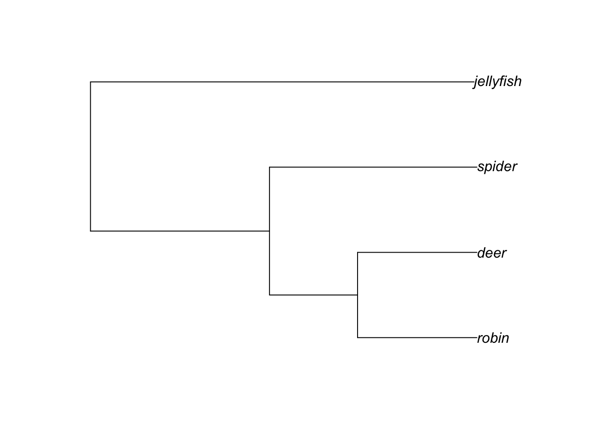
The topology of this tree can be represented in Newick format as:
(((robin,deer),spider),jellyfish);
Note that Newick trees always end with a semicolon. Branch lengths can be added into a tree by adding a colon followed by the branch length after the node. This represents the length of the branch immediately following that node, so numbers after a tip label show how long the branches at the tips of the tree are, and others show how long the internal branches are.
For our tree above this can be written as:
(((robin:4.2,deer:4.2):3.1,spider:7.3):6.3,jellyfish:13.5);
And that is basically all there is to Newick trees! In R these can be read in using read.tree from the APE package. They are usually stored in .tre or .phy files.
3.2.2 NEXUS trees
NEXUS files are a little more complicated, but are also based on the Newick format. Many tree inference packages will output trees as NEXUS files, so they are very commonly used in R. You read them in using read.nexus from the APE package, and they are usually stored in .nex files.
A NEXUS file for the tree above might look like the example below. First it uses the #NEXUS tag to tell the computer it is a NEXUS file, then the first block lists how many taxa there are (NTAX) and then what the names of the taxa are (TAXLABELS), i.e. the tip labels. Then the second block first gives each taxon a number, then the TREE block shows the tree in Newick format, exactly as we did above except using the numbers for the taxa rather than their names. The UNTITLED = [&R] part just means we haven’t given the tree a name, and that the tree is rooted.
#NEXUS
BEGIN TAXA;
DIMENSIONS NTAX = 4;
TAXLABELS
robin
deer
spider
jellyfish
;
END;
BEGIN TREES;
TRANSLATE
1 robin,
2 deer,
3 spider,
4 jellyfish
;
TREE * UNTITLED = [&R] (((1:4.2,2:4.2):3.1,3:7.3):6.3,4:13.5);
END;NEXUS files can be much more complex and include the data used to infer the tree too, but we don’t need this for comparative analyses so read.nexus will just ignore it.
Sometimes someone will email you a .tre or .nex file, or you’ll download one from the internet, but when you use read.tre or read.nexus it just keeps giving you an error. Before panicking, check what you did after you downloaded the tree file. Did you open it to take a look? On some computers, doing this makes the computer freak out because it doesn’t know what to do with .tre or .nex files, so it converts them into something it does understand like .txt or .docx. This then alters the tree file to the point that R can no longer read it. To solve the problem, just download the file again but this time don’t open it!. Just save it and then read it into R. If you need to look at one of these files outside of R, try “Open with” and pick a text editor like Notepad or TextEdit. This shouldn’t alter the file.
3.3 How are phylogenies formatted in R?
You don’t need to know how phylogenies are represented in R to use them, but it helps to have a bit of an idea what is going on.
To load a tree into R you need either the function read.tree or read.nexus from the package APE. read.tree can deal with a number of different types of data (including DNA) whereas read.nexus reads NEXUS files. Let’s practice with our basic tree from the Primer. We can read it in using read.tree. Remember to load the APE library first or this won’t work.
Note that whether we read the tree in using read.tree or read.nexus the resulting tree in R is the same.
To understand what is going on we need a bit of computer programming jargon. Phylogenies are stored as objects of class phylo. What do I mean by this? Whenever we make a new “thing” in R and save it with a name we have created an object. So the code tree <- read.tree("data/basic.tre") above makes a new object called tree which will have the phylogeny stored in it. Each object in R belongs to a class, which is a sort of blueprint for how the object should behave. For example, objects of numeric class will behave differently to objects of character class - we can’t multiply two characters (i.e. words) together but we can multiply two numbers. There are many classes in R and each have different rules. The phylo class is one of these that we use for phylogenies.
Let’s examine the tree by typing:
##
## Phylogenetic tree with 4 tips and 3 internal nodes.
##
## Tip labels:
## robin, deer, spider, jellyfish
##
## Rooted; includes branch lengths.Notice that when we print out a phylo object like tree, it doesn’t just give us all of the information in the tree file. Instead it gives us a couple of bits of summary information. It tells us how many tips (4) and internal nodes (3) the tree has, then lists the tip labels. It also tells us the tree is rooted and contains branch lengths.
If we want to look more closely at the components that make up a phylo object we need to look at the structure of tree using str.
## List of 4
## $ edge : int [1:6, 1:2] 5 6 7 7 6 5 6 7 1 2 ...
## $ edge.length: num [1:6] 6.3 3.1 4.2 4.2 7.3 13.5
## $ Nnode : int 3
## $ tip.label : chr [1:4] "robin" "deer" "spider" "jellyfish"
## - attr(*, "class")= chr "phylo"
## - attr(*, "order")= chr "cladewise"This gives us a bit more information about what is going on. tree contains four variables:
- edge shows how the branches and tips are linked together (I’ll show you how this works below).
- edge.length gives the branch lengths.
- Nnode tells you how many internal nodes there are.
- tip.label is a list of the taxon names.
If we want to see the whole of the phylo object we have to use a little trick. Everything we do to tree at the moment will work based on tree being a phylo object. If we want to see the whole thing, we need to tell R to ignore that, and present it as is. To do this we can use unclass to remove the class rules.
## $edge
## [,1] [,2]
## [1,] 5 6
## [2,] 6 7
## [3,] 7 1
## [4,] 7 2
## [5,] 6 3
## [6,] 5 4
##
## $edge.length
## [1] 6.3 3.1 4.2 4.2 7.3 13.5
##
## $Nnode
## [1] 3
##
## $tip.label
## [1] "robin" "deer" "spider" "jellyfish"
##
## attr(,"order")
## [1] "cladewise"If we only wanted to see the full edge component we can use the $ to extract just that variable from tree:
## [,1] [,2]
## [1,] 5 6
## [2,] 6 7
## [3,] 7 1
## [4,] 7 2
## [5,] 6 3
## [6,] 5 4What is going on here? The easiest way to understand is to look at the edge matrix and the tree with node numbers added to it (see below). For all trees, 1 is the number of the first tip taxon at the base of the phylogeny, 2 is the number of the second taxon and so on until you have each taxon numbered. The numbers then refer to nodes, working through the tree from the root forwards.
So in the edge matrix above, 1, 2, 3 and 4 are the tips. Node 7 leads to tips 1 and 2. Node 6 leads to node 7, and tip 3. Node 5 leads to node 6 and tip 4. Node 5 is the root node.
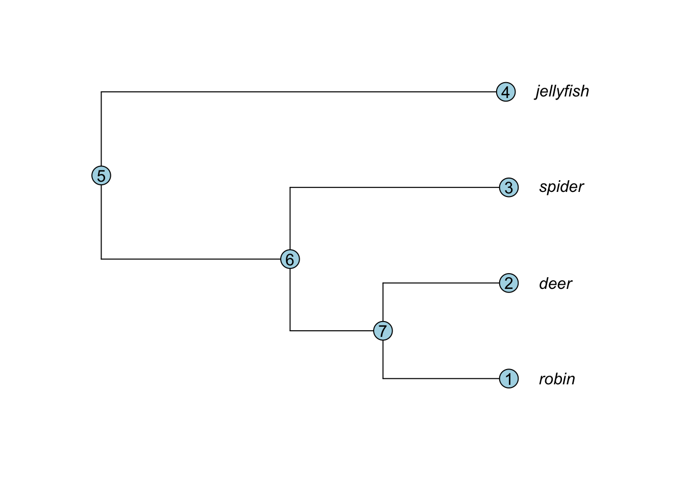
Notice that the edge.length variable is in the same order as edge. So the first row of edge shows a branch joining node 5 to node 6, and this has a branch length of 6.3 (the first entry in edge.length). And so on…
## [,1] [,2]
## [1,] 5 6
## [2,] 6 7
## [3,] 7 1
## [4,] 7 2
## [5,] 6 3
## [6,] 5 4## [1] 6.3 3.1 4.2 4.2 7.3 13.5As I said above, you don’t need to fully understand this, so don’t worry if this is confusing. But you will see at various points we do things like tree$tip.label to extract or change tip labels, and we might set branch lengths using tree$edge.length somewhere in our code. So now you understand where those bits of information come from.
3.4 Plotting phylogenies
Regardless of what you’re using a phylogeny for, you’re likely to want to plot it at some point. Even if you don’t need a plot straight away, I highly advise plotting your phylogeny before you do anything else. It’s good practice to look at whatever data you read into R to check it, and plotting helps you check it looks correct.
Most phylogeny plotting in R uses the package ape. Recently, however, a new package called ggtree has been introduced that builds on the popular ggplot2 method of plotting in R, and is much more flexible than ape. This leaves us in a bit of a quandary - which should you use? And which should I teach you?! I think there is a benefit in learning the basics of both approaches. In my own work, I use ape to plot trees I am working with to quickly check what is going on. I also use ape plotting indirectly in other packages like phytools - see later exercises. When I need to produce a pretty or complex tree I’ll often use ggtree instead. The exercises here will mirror this. The aim is not to give you a thorough introduction to all the things we can do with plotting phlyogenies in R, but more to give a taster of what is possible, and what we will need for the later exercises.
3.4.1 Basic phylogeny plotting with APE
Our basic tree is a bit small, so let’s use some data that is built into R with a phlyogeny of bird orders.
First load the data. This will read in a tree called bird.orders.
Now plot the tree.
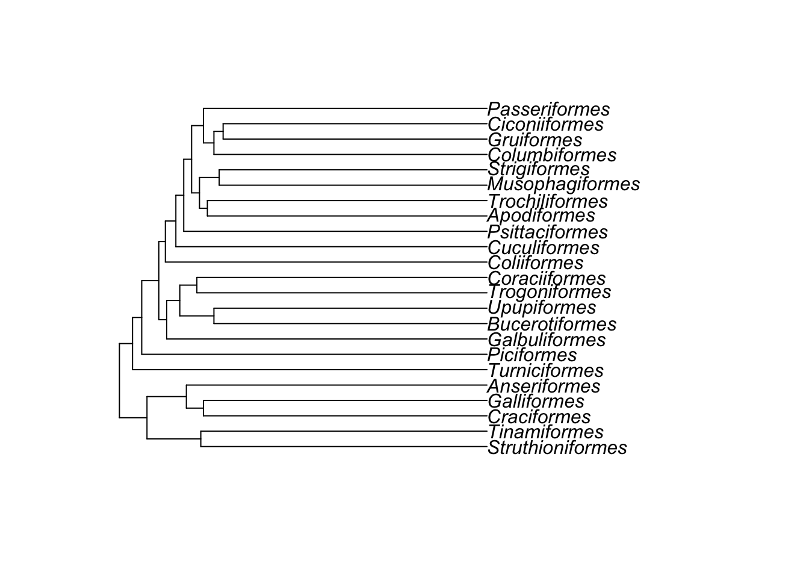
Note that the function we use to plot phylogenies in ape is just called plot, but R knows to plot a phylogeny not anything else. How does this work? plot is one of a set of clever functions in R that uses an ifelse statement to decide what kind of plot it should do. When you ask R to plot something, it first determines what class of object it is. It then chooses the correct version of plot for that class. In this case the function it is actually using to plot the phylogeny is plot.phylo. This is important if you want to look at the help file for plotting phylogenies, because you need to use ?plot.phylo not ?plot.
# Access the help file for phylogeny plotting
# This should open a help file in another window of RStudio
?plot.phyloYou should see from the help file that there are lots of options for plotting trees. For example if we want to use a fan-shaped tree, with smaller tip labels, and no white space round the edges to make the tree fill the plotting area, we can use:
# Plot the tree as a circular/fan phylogeny with small labels
plot(bird.orders, cex = 0.6, type = "fan", no.margin = TRUE)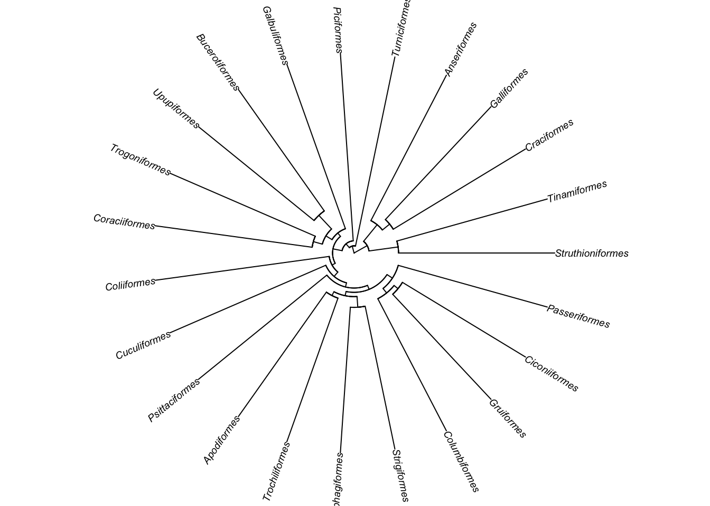
You can change the style of the tree (type), the color of the branches and tips (edge.color, tip.color), and the size of the tip labels (cex). Here’s an fun/hideous example!
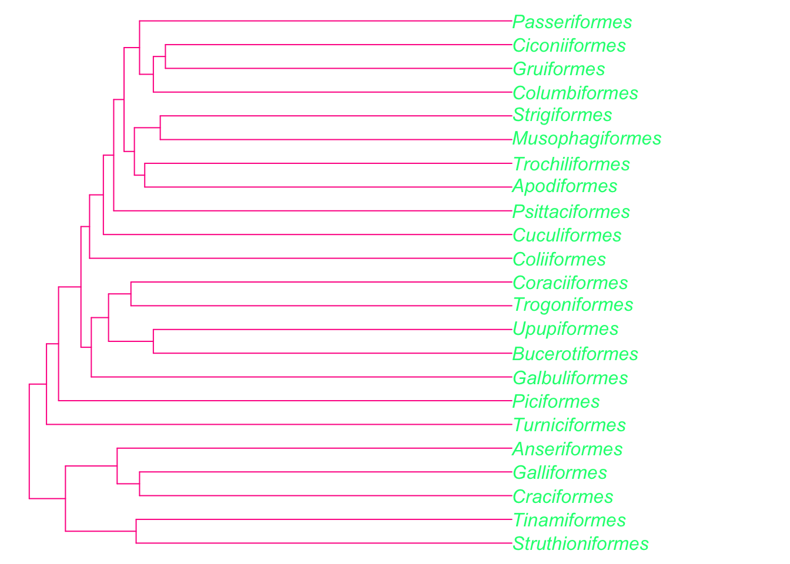
We can also add information about the traits of species to trees. We will come back to this when we cover models of evolution, but as a quick demonstration, let’s imagine we want to display some data on our bird tree. For example, let’s code these bird orders based on how much I like them (this is clearly a total lie because I love them all equally, but for the sake of an example I’m willing to pretend!).
# Make a factor which contains how much I like each order
myfaves <- factor(c("awesome", "cool", "ok", "awesome", "ok",
"ok", "ok", "awesome", "cool", "ok", "ok",
"cool", "cool", "awesome", "ok", "ok",
"cool", "ok", "ok", "ok", "ok", "cool", "ok"))Now we can plot this on a phylogeny. First we decide which colours we’d like and make a list of these. To look at a list of inbuilt colours in R type in colors(). You can also use any hex colour coded as e.g. “#000000” instead of “white”. The first colour will be the first category alphabetically, the second will be the second category alphabetically, and so on.
Now plot the tree and add square labels to the tips showing the categories. We use label.offset = 1 to move the labels to the right a bit so the squares will fit. I’ve also added a legend.
# Plot the tree
plot(bird.orders, label.offset = 1, cex = 0.9, no.margin = TRUE)
# Add the squares at the tip labels.
tiplabels(pch = 22, bg = mycolours[as.numeric(myfaves)], cex = 1.2, adj = 1)
# Add a legend
legend("topleft", fill = mycolours,
legend = c("Awesome", "Cool", "OK"),
bty = "n")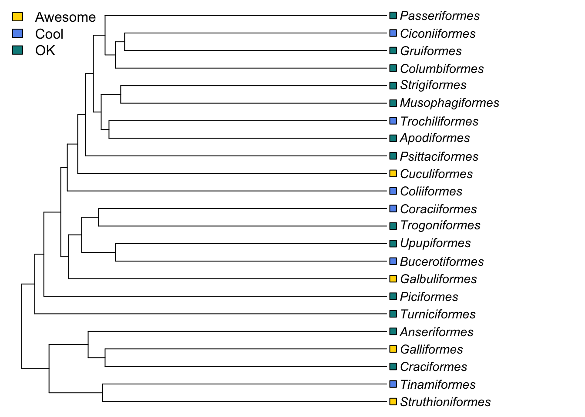
pch = 22 sets the tip labels to be unfilled squares, bg (background) defines the colours of the squares using the list of colours we provided, and sorting them based on what the value for that order was for myfaves.
cex = 1.2 increases the point size, and adj = 1 moves the tip labels sideways a bit so they don’t obscure the ends of the branches.
3.4.2 Basic phylogeny plotting with ggtree
I won’t go into a huge amount of detail about ggtree because the manual for ggtree is really comprehensive, and for the most part you won’t need to know how to do most of the things it can do. Instead I’ll give a basic introduction, and then show you how to make some of the plots used in chapter 2 of the Primer. I will also provide the code used to build figures in the Primer where appropriate in later exercises.
3.4.2.1 A quick intro to ggplot2
ggtree extends the ggplot2 package to work with phylogenies. What’s ggplot2? The ggplot2 package was developed by Hadley Wickham to implement some of the ideas in a book called “The Grammar of Graphics” by Wilkinson (2005), hence the gg bit of the name. Many books and online tutorials cover ggplot2 in detail, so here I’ll just cover the basics you need to understand how ggtree works. See https://ggplot2-book.org/ for details.
ggplot2 works on the basis of layers. You start off with a line of code that uses the function ggplot, then at the end of the line you add a +. On the next line you add a layer. This layer might tell R what kind of plot to make, what the axes should be, how to draw the legend etc. You keep adding layers until you get the plot that you want.
Each layer can have six components, but we’ll just focus on the main three:
- The data. Every layer needs some data, in the form of a dataframe (or tibble). Each layer can be associated with a different dataset if appropriate.
A geometric object, called a ‘geom’. geoms refer to the things we can see on a plot, such as points, lines or bars.
A set of aesthetic mappings. These describe how variables in the data are associated with the aesthetic properties of the layer. This can include what to use as x and y axes, and the colour and size of the objects (e.g. points) on a plot. Each layer can be associated with its own unique aesthetic mappings. Aesthetic mappings are always defined inside the
aesfunction. Different geoms will need different sets of aesthetic mappings, for example to draw a scatter plot you need to define the x and y axes, but for a histogram you only need the x axis.
Each layer will also have layer specific parameters. These are the features of a layer, for example in geom_point, the geom that makes points on a graph, one layer specific parameter is colour = which defines the colour of the data points.
Let’s quickly demonstrate this using some fake data - read in the code below to create a monster dataset.
# Make some fake data
monsterdata <- data.frame(monster = c("vampire", "golem",
"cookie-monster", "manticore", "wererat"),
type = c("dead", "dead", "alive", "dead", "alive"),
scariness = c(65, 50, 10, 75, 95))To make a really basic plot…
ggplot(data = monsterdata, aes(x = monster, y = scariness)) +
geom_point(colour = "deeppink", size = 4) +
theme_bw() +
ylim(0, 100)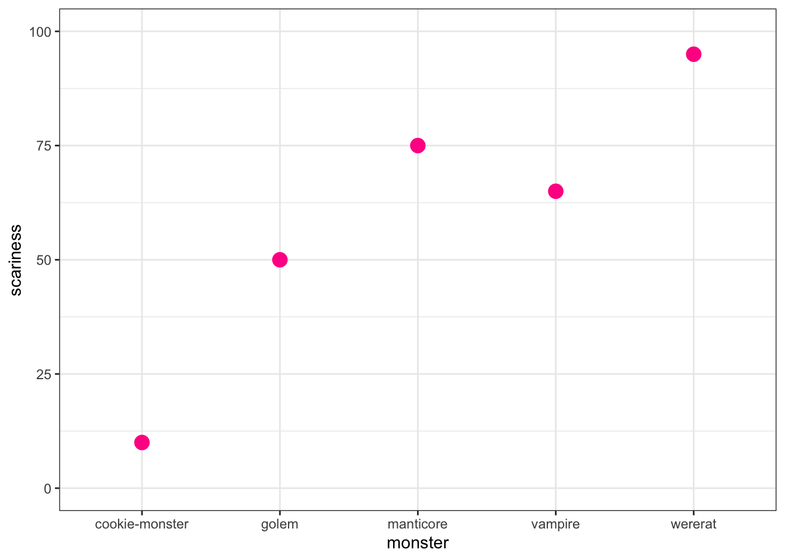 A couple of points to note:
In ggplot2, theme is used to define the overall look of the plot. We can use the theme function modify everything individually, but there are some built in themes that do lots of things at once. theme_bw is one of my favourites as it gets rid of the horrible grey background that is a ggplot2 default, but keeps the nice background grid.
I also used ylim to change the y axis limits to go from 0 to 100.
Another thing I’m going to do below with ggtree is plot multiple plots on one plotting space. There are a couple of ways to do this, but the easiest is to use the package patchwork. First we need to assign our plots to an object using <-. We do this as follows
myplot1 <-
ggplot(data = monsterdata, aes(x = monster, y = scariness)) +
geom_point(colour = "deeppink", size = 4) +
theme_bw() +
ylim(0, 100)
myplot2 <-
ggplot(data = monsterdata, aes(x = monster, y = scariness)) +
geom_point(colour = "gold1", size = 4, shape = "triangle") +
theme_bw() +
ylim(0, 100)To look at the plots we would now have to type myplot1 or myplot2 into R, but I haven’t done this here because we already looked at the first plot above, and all I changed in the second plot was the colour and shape of the points.
With patchwork, we can use + to plot things next to each other, or / to plot things on top of one another, and () to do more complex arrangements. See https://patchwork.data-imaginist.com/articles/patchwork.html for details. Here let’s just plot them next to each other…
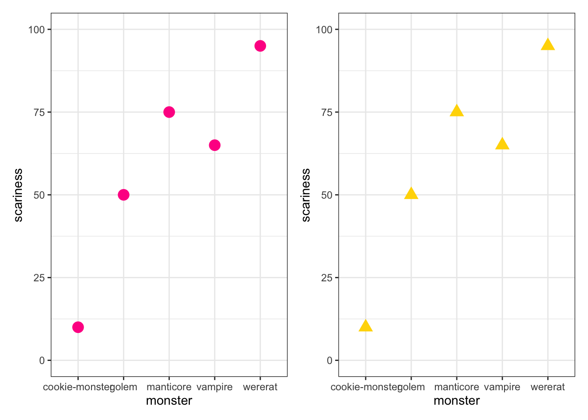
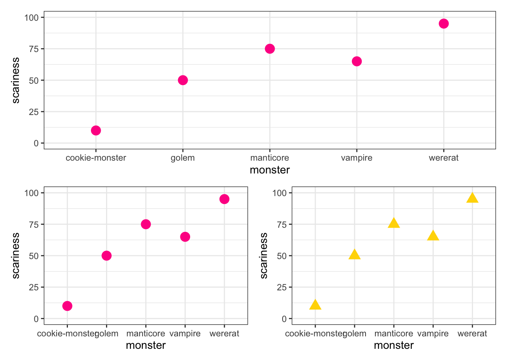
Below you’ll see I use the ggplot2 layer labs to add labels (i.e. A, B, C) to plots in multi-panel figures. We can also angle the x axis labels so they fit, add trend lines etc. But I’ll let you find out how to do that for yourselves!
3.4.3 Back to ggtree
OK that should give you the basics of what to expect from ggplot2. Now let’s use ggtree…
To plot a phylogeny using ggtree we always start with the ggtree function (not ggplot). We then add layers using the + like in ggplot2. Some layers are the same (e.g. xlim, ylim), others are unique to ggtree (e.g. geom_tiplab). ggtree also has an inbuilt theme for trees called theme_tree.
To plot the basic phylogeny we’ve been practising with we use:
library(ggtree)
ggtree(tree) +
# Add theme for trees
theme_tree() +
# Change x and y limits so the tip labels fit
xlim(0, 22) +
ylim(0, 5) +
# Add tip labels as text, slightly offset from the tips and aligned
geom_tiplab(geom = "text", align = TRUE, offset = 0.5, linetype = NA)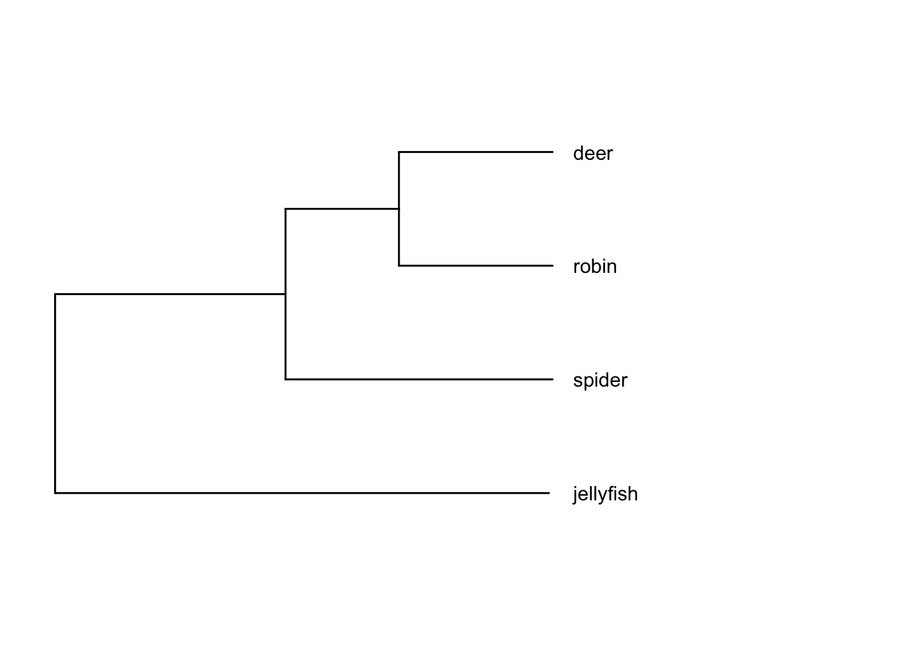
Note that you might need to fiddle around with the xlim and ylim a bit to make sure your phylogeny and the tip labels fit. If we don’t specify the limits, the tip labels often fall off the plotting window (see below), and the tree will push right up against the top and bottom of the page making it hard to add things like images to the tips.
# Demonstration of what happens if you don't define the x and y limits
ggtree(tree) +
theme_tree() +
geom_tiplab(geom = "text", align = TRUE, offset = 0.5, linetype = NA)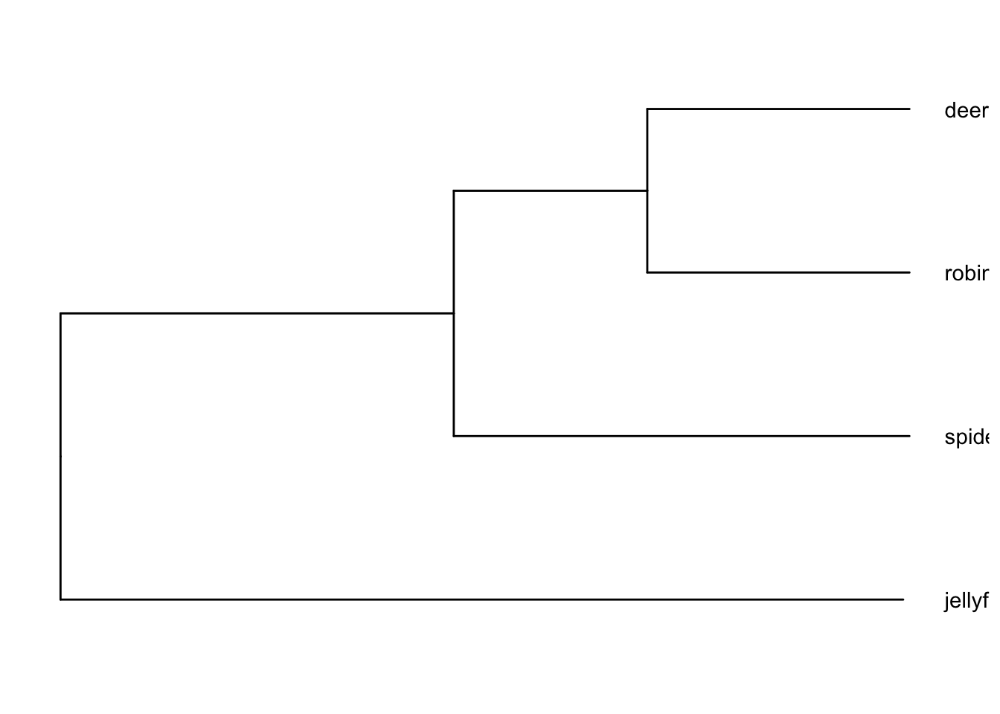
ggtree is clearly a bit more involved than just using plot.phylo with ape. If you’re happy with plotting in ape you don’t need to use ggtree. As I mentioned above, for day-to-day tree viewing and checking I just tend to use ape, so don’t worry if this is all incomprehensible.
One thing, among many, that ggtree is great for is adding images to the tips rather than species names. To do this you need to collate the images you want to use first. You may want to draw your own, or I often download them from the excellent PhyloPic website (these are free to use but don’t forget to record who made the image so you can credit them in your papers/talks). To keep my folder tidy I keep images in a separate subfolder called, predictably, images.
You need the package ggimage installed for this to work, which for me took some time and also required that I install ggplotify, magick, and gridGraphics. If this is a struggle, then just skip this example.
# Plot with images at tips
ggtree(tree) +
theme_tree() +
# Change limits so labels fit
xlim(0, 22) +
ylim(0, 5) +
# Add tip label pictures
geom_tiplab(aes(image = c("images/deer.png",
"images/robin.png",
"images/spider.png",
"images/jellyfish.png",
rep(NA, 3))),
geom = "image", align = TRUE, offset = 0.5,
linetype = NA, size = c(0.12, 0.15, 0.09, 0.15))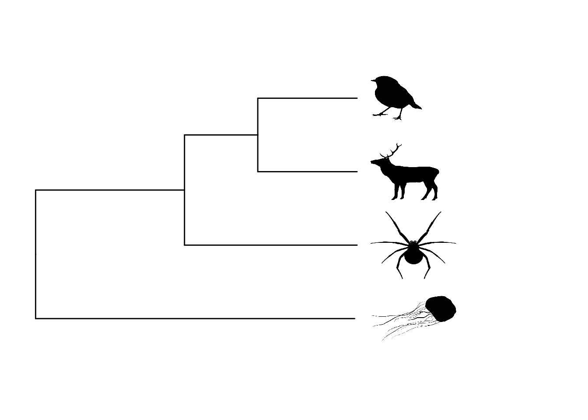
Note that to add either text or images to the tips we use the same layer function, geom_tiplab. If doing this with your own data you’ll likely need to fiddle with the sizes of the images to get them looking right.
Some of you may be wondering what the rep(NA, 3) bit of the code above does. When we try to add images to the tips, the function also tries to add images to the internal nodes. We don’t want these to have images so we just ask ggtree to use NA, i.e. don’t add an image. rep(NA, 3) means replicate NA three times (for the three internal nodes). Again you’ll probably need to modify this number when you do this for your own data.
As with plot.phylo we can plot phylogenies in different ways, see code below. Fan trees are called circular trees. Note the different values for offset and hjust (horizontal justification) I’ve used here to make the labels fit. Again you will need to fiddle with these numbers to get this to work for your data.
# Standard tree
p1 <-
ggtree(tree) +
theme_tree() +
# Change limits so labels fit
xlim(0, 22) +
ylim(0, 5) +
# Add tip labels
geom_tiplab(geom = "text", align = TRUE, offset = 0.5, linetype = NA) +
labs(tag = "A", size = 2)
# Standard tree facing up
p2 <-
ggtree(tree) +
theme_tree() +
coord_flip() +
# Change limits so labels fit
xlim(0, 22) +
ylim(0, 5) +
# Add tip labels
geom_tiplab(geom = "text", align = TRUE, offset = 2, hjust = 0.5, linetype = NA) +
labs(tag = "B", size = 2)
# Slanted tree
p3 <-
ggtree(tree, layout = "slanted") +
theme_tree() +
# Change limits so labels fit
xlim(0, 22) +
ylim(0, 5) +
# Add tip labels
geom_tiplab(geom = "text", align = TRUE, offset = 0.5, linetype = NA) +
labs(tag = "C", size = 2)
# Fan/circular tree
p4 <-
ggtree(tree, layout = "circular") +
theme_tree() +
# Add tip labels
geom_tiplab(geom = "text", align = TRUE, offset = 5, hjust = 0.5, linetype = NA, size = 3) +
labs(tag = "D", size = 2)
# Plot
(p1 + p2) / (p3 + p4)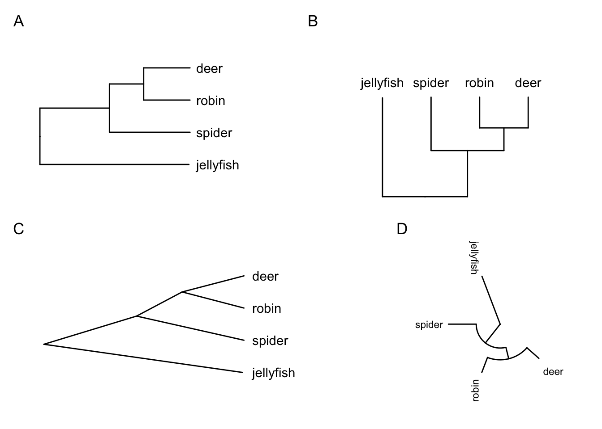
What about highlighting clades? We can use geom_hilight to add coloured shading to all species from a defined node, and/or geom_cladelabel to label clades (A and B below) from a defined node. The offset in geom_cladelabel defines how far from the phylogeny tips the lines should be drawn. Again, you’ll need to play with this to get the best figure possible.
# Plot with images at tips
ggtree(tree) +
theme_tree() +
# Change limits so labels fit
xlim(0, 22) +
ylim(0, 5) +
# Add tip label pictures
geom_tiplab(aes(image = c("images/deer.png",
"images/robin.png",
"images/spider.png",
"images/jellyfish.png",
rep(NA, 3))),
geom = "image", align = TRUE, offset = 0.5,
linetype = NA, size = c(.12, .15, .09, .15)) +
# Highlight clades
geom_hilight(node = 6, fill = "cornflowerblue", alpha = 0.4) +
geom_hilight(node = 7, fill = "springgreen", alpha = 0.4) +
geom_cladelabel(node = 7 , label = "A", offset = 4,
fontsize = 5) +
geom_cladelabel(node = 6 , label = "B", offset = 6,
fontsize = 5) 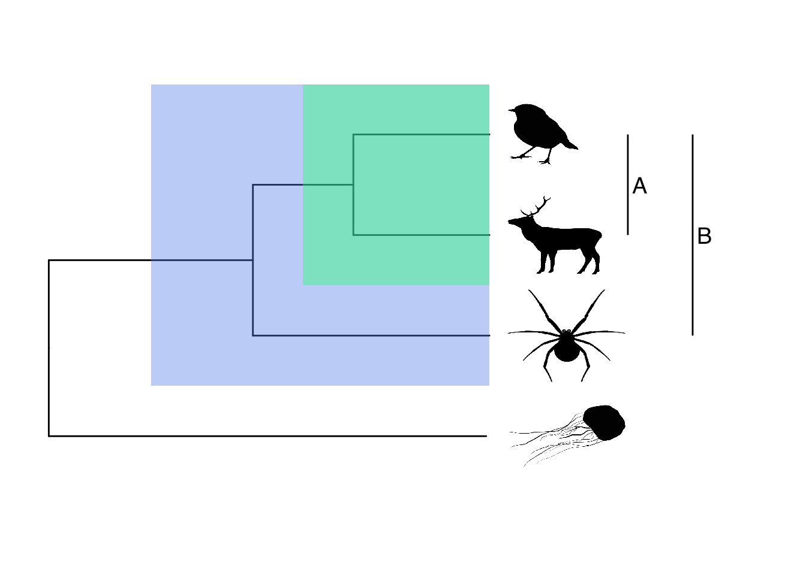
You can also highlight non-monophyletic groups using groupOTU. Here’s a quick and silly example…
# Define group
feathers <- list(no = c("deer","jellyfish", "spider"),
yes = c("robin"))
# Plot with images at tips
p <-
ggtree(tree) +
theme_tree() +
# Change limits so labels fit
xlim(0, 25) +
ylim(0, 5) +
# Add tip labels
geom_tiplab(geom = "text", align = TRUE, offset = 0.5, linetype = NA)
# Add colours to branches and labels
groupOTU(p, feathers, 'feathers') +
aes(color = feathers) +
scale_colour_manual(values = c("orange1","darkblue")) +
theme(legend.position = "top")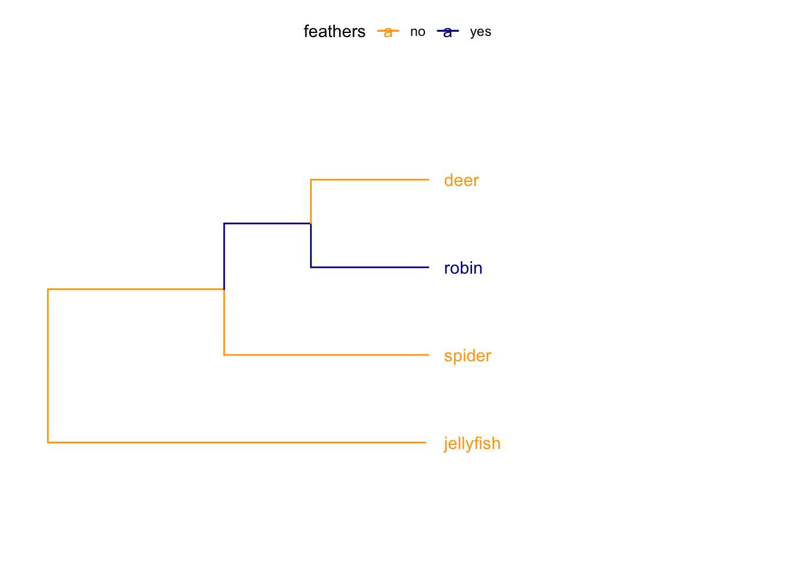
Note the warning here that tells us not to use filter_. This is from the internal ggtree code and can be ignored for now. Either this will be updated in the future, or ggtree will change how this is done. So if this code breaks completely try the ggtree help files for a solution.
There are many more things you can do with ggtree, all based on this idea of adding layers. See the manual for ggtree at http://yulab-smu.top/treedata-book/index.html for more details.
3.5 Phylogeny manipulation
To run analyses in R we often need to manipulate our phylogeny in some way so that the analyses can work. I’ll mention these requirements where needed, but here are some common things we might need to change. I’ll use the bird.orders phylogeny again as it’s a manageable size.
3.5.1 Removing polytomies
Most R functions require your tree to be dichotomous, i.e. to have no polytomies. To check whether your tree is dichotomous use is.binary.tree.
## [1] TRUEIf this is FALSE, use multi2di to make the tree dichotomous. This function works by randomly resolving polytomies with zero-length branches. This doesn’t change the tree overall, it’s just a clever trick to get the functions to work.
3.5.2 Rooting your phylogeny
Most R functions also require the tree to be rooted, i.e., to have one (or more) taxon designated as the outgroup. We can check whether the tree is rooted as follows.
## [1] TRUEOur tree is rooted but if you wanted to change the root, or root an unrooted tree use root. We can make a new tree and root it on something silly (e.g. Passeriformes) to demonstrate. Remember that your root should be the outgroup from the phylogenetic inference. Rooting a tree incorrectly can cause big issues with downstream analyses, so make sure you choose carefully.
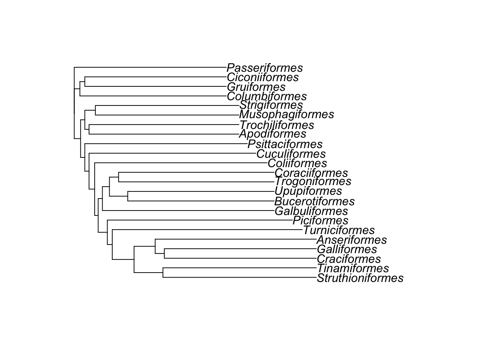
3.5.3 Manipulating the species in your phlyogeny
When we do comparative analyses, we have data and a tree to deal with. It’s very common to have species in your data that are not in your tree and vice versa. In the next exercise I’m going to show you how to match up the species in your comparative data with the species in your phylogeny. But you may also want to make these changes for plotting purposes, so it is useful to know how to do them anyway.
3.5.3.1 Renaming species
We can change the names of species using gsub which stands for generalised substitution. This can help with typos etc. or if you have minor taxonomic changes to make. Here, for fun let’s rename Passeriformes…
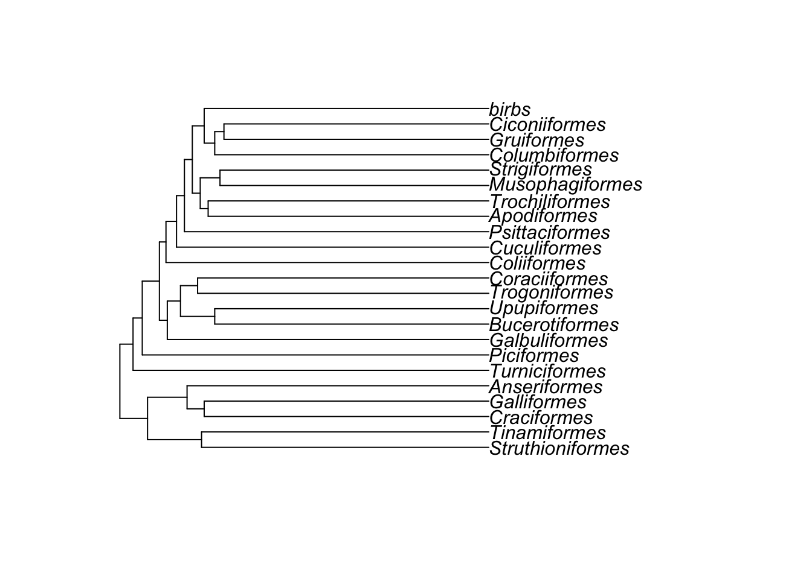
3.5.3.2 Removing species
Removing species uses the function drop.tip. If we want to remove birbs from the tree above..
You can also remove multiple tips at once…
However, if you’re looking to do something more complex like removing entire groups it’s probably easier to use the functions in the next exercise.
3.5.3.3 Adding species
Sometimes you’ll find your phylogeny is missing some species that you have in your dataset. In general the easiest thing is just to omit those species from your analysis, but it may be that they’re data points you really want to keep. In which case you can add species to the tree.
Before you can add the species you need to find out where in the tree the species belongs. This will require looking in the literature to find the closest relative of the species that already exists in the tree. You also need to know how long the branch should be that will attach the new species to the tree. In some cases this will also be possible to locate in the literature. In other cases, for example if you’re adding a species as a sister species to another species within its genus, you can just choose an arbitrary short branch length, e.g. 0.1 or 1. The exact value depends on the branch lengths in the tree. We can then use R to add the species to the tree.
To add a species in R, we first select the node that we want to add the tip to. For example, if we want to add Big Bird to our bird.orders tree as a sister to the Galliformes, we can identify the node to add Big Bird to using:
## [1] 2We then add the species to this node using the bind.tip function in phytools:
library(phytools)
bird.orders_plusbigbird <- bind.tip(bird.orders, tip.label = "Big_Bird",
where = node, position = 4.5)
plot(bird.orders_plusbigbird)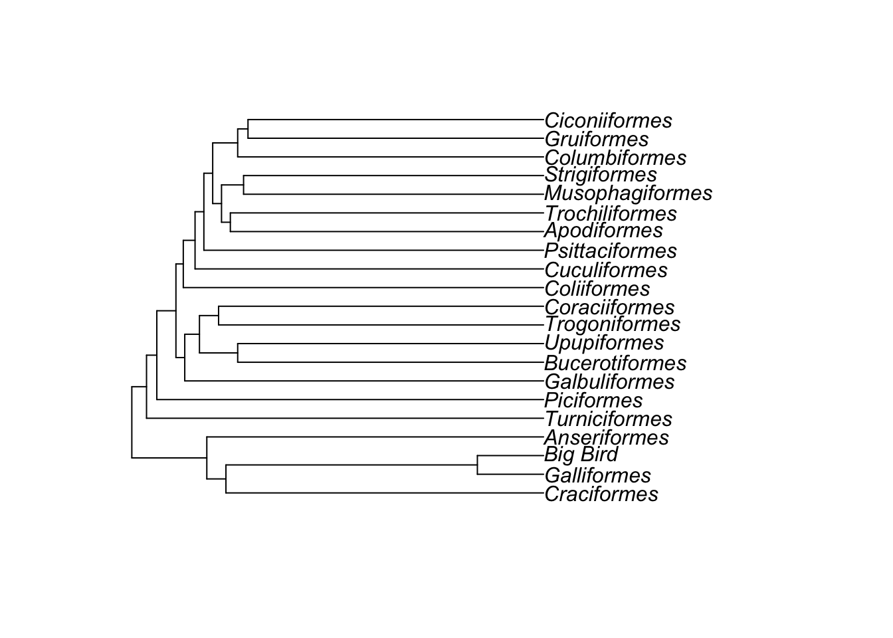
You can see that Big Bird has been added to the Galliformes branch. In the bind.tip function, position is the length of the new branch. Here we used 4.5, but you could use other numbers if you needed the branch to be longer or shorter (i.e. if you knew the divergence between Galliformes and Big Bird was longer ago or more recent).
Note that the value of position is limited by the length of the branch you are adding the new species to. If you see the error below it means you’ve given position a value which is longer that the existing branch, and you’ll need to make it a bit smaller.
Error in bind.tree(tree, tip, where = where, position = pp) : ‘position’ is larger than the branch length
3.5.4 Writing phylogenies to file
After manipulating a phylogeny, if you want to save the new tree you can use write.tree or write.nexus as preferred. You can then use this modified tree for you analyses or plots, meaning that you don’t have to do all the manipulation again every time you want to use it.
If we want to save the Big Bird tree we can use:
3.6 Summary
This exercise should have given you the skills to understand, plot and manipulate phylogenies in R.
3.7 Practical exercise
Read in the frog-tree.nex phylogeny from the folder. This comes from Feng et al. (2017). Then do the following:
- Use R functions to determine:
- how many species are in the tree?
- is the tree fully resolved?
- is the tree rooted?
- Use
plot.phyloto plot the tree.- Can you change the size of the tip labels?
- Can you make a fan-shaped plot?
- Can you change the colour of the tips and branches?
- Save the tree to file as “mysuperdoopertree.nex”
EXTRA FUN. Use ggtree and the ggtree manual to produce a phylogeny plot of this tree that you could use in a publication OR have some fun and make the most garish looking tree you possibly can. Playing around with these packages is the best way to learn how to use them. If you make a particularly amazing or horrific tree, send a screenshot to me.
References
Feng, Yan-Jie, David C Blackburn, Dan Liang, David M Hillis, David B Wake, David C Cannatella, and Peng Zhang. 2017. “Phylogenomics Reveals Rapid, Simultaneous Diversification of Three Major Clades of Gondwanan Frogs at the Cretaceous–Paleogene Boundary.” Proceedings of the National Academy of Sciences 114 (29): E5864–E5870.